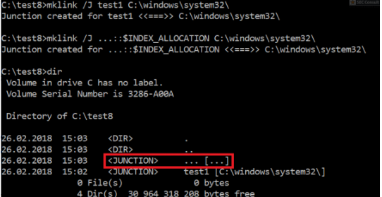

irectory junctions are a very useful NTFS feature to find security vulnerabilities for attackers. Using it you can create (with normal user privileges) a symbolic link to a destination folder.
The best security vulnerability to explain directory junctions is in my opinion AVGater, where the attacker places a file in folder x. Then he marks the file as a virus and the installed AntiVirus solution will move it into the quarantine. After that the attacker removes the folder x and replaces it with a directory junction named “x” which points to C:\windows\System32\. If the attacker now clicks on the “restore” button the AntiVirus solution will copy the file to the x folder which now points to system32 with SYSTEM privileges (which directly leads to EoP).
Directory junctions can often be abused if the targeted application contains race condition vulnerabilities (TOCTOU vulnerabilities – time of check time of use).
A directory junction can be created with the mklink utility together with the /J argument. It’s possible to combine this with the ::$INDEX_ALLOCATION trick to create a directory junction with the name “…”:

The first directory junction “test1” was created with a normal name and therefore the destination is correctly shown in the “dir” output. However, in the case of the “…” directory junction, the target is no longer displayed (instead […] is shown; see the red box). Please also note that you can let junction1 point to junction2 which points to junction3 and so on until the last one points to the actual destination.
Since the paths are confused, you can enter the junction with the above mentioned “cd …\…\” trick (to be in the system32 folder), but “.” will point to “C:\test8” instead.

The dir command prints files from the system32 folder (red marked; please also note that the first command created the hello.bat file in C:\test8\).

The red marked files are the last files from the system32 folder (last output of the dir command). In blue we can see that “hello.bat” from the current directory (“.\”) should be executed. Since the paths are confused, this will execute C:\test8\hello.bat (green box) and not C:\windows\system32\hello.bat. I’m not sure if this has a direct impact on the security since you can start files in any folder anyway, however, it could maybe be used to bypass application whitelisting solutions with whitelisted script files.